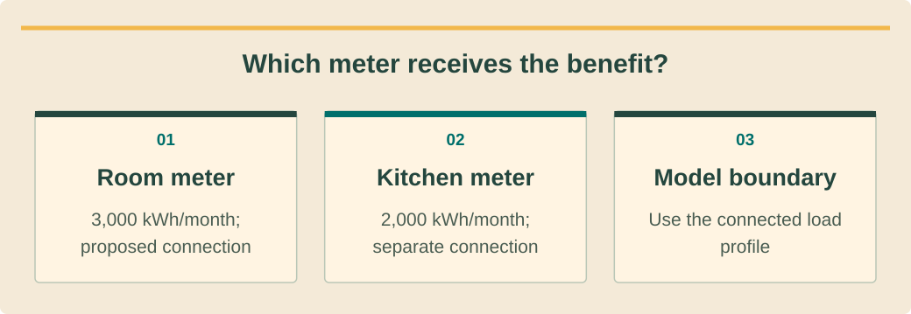

Sales and customer advisoryמכירות וייעוץ לקוחขายและให้คำปรึกษาลูกค้า · 2 / 9
Bills, load evidence and seasonal realityחשבונות, ראיות עומס ועונתיותบิล หลักฐานโหลด และฤดูกาล
Build a usable load brief before estimating commercial value.לבנות תיק עומסים שימושי לפני הערכת תועלת.เตรียมข้อมูลโหลดก่อนประเมินมูลค่าทางธุรกิจ
What you will be able to doמה תדעו לעשותสิ่งที่คุณจะทำได้
- Reconcile bills to the correct meter.להתאים חשבונות למונה הנכון.จับคู่บิลกับมิเตอร์ที่ถูกต้อง
- Distinguish consumption totals from timing.להבחין בין סך צריכה לעיתוי.แยกยอดใช้ไฟออกจากเวลาใช้
- Record uncertainty without silently filling gaps.לתעד אי ודאות בלי למלא פערים בסתר.บันทึกความไม่แน่นอนโดยไม่เติมข้อมูลเอง
Read the bill as evidenceקריאת החשבון כראיהอ่านบิลเป็นหลักฐาน
Match account number, address, meter number and billing dates to the proposed site. A property may have separate accommodation, kitchen and pump meters. Photograph labels only where safely accessible; never open electrical equipment to complete a sales form.התאימו חשבון, כתובת, מונה ותאריכי חיוב לאתר. ייתכנו מונים נפרדים לחדרים, מטבח ומשאבות. צלמו תוויות נגישות בבטחה בלבד; אין לפתוח ציוד חשמלי לצורך טופס מכירות.จับคู่เลขบัญชี ที่อยู่ มิเตอร์ และรอบบิลกับสถานที่ อาจมีมิเตอร์แยกห้องพัก ครัว และปั๊ม ถ่ายป้ายเฉพาะจุดปลอดภัย ห้ามเปิดอุปกรณ์ไฟฟ้าเพื่อกรอกแบบขาย
Keep consumption, energy charges, Ft, service charges, tax and arrears in separate columns. A large payment may include an overdue balance rather than unusually high consumption. Record tariff category and voltage as printed; unclear classifications go to PEA verification.הפרידו צריכה, חיוב אנרגיה, Ft, שירות, מס וחובות. תשלום גבוה עשוי לכלול פיגור ולא צריכה חריגה. העתיקו סוג תעריף ומתח כפי שמופיעים; סיווג לא ברור מופנה לבדיקת PEA.แยกหน่วยไฟ ค่าพลังงาน Ft ค่าบริการ ภาษี และยอดค้าง บิลสูงอาจเกิดจากหนี้เก่าไม่ใช่ใช้ไฟมาก บันทึกประเภทอัตราและแรงดันตามบิล หากไม่ชัดให้ตรวจสอบกับ PEA
Choose a representative baselineבחירת בסיס מייצגเลือกฐานที่เป็นตัวแทน
Request a full operating cycle where available and annotate occupancy, closure, renovation and equipment changes. Do not multiply the busiest month by twelve and call it annual usage. Missing months remain visible in the brief and reduce confidence.בקשו מחזור תפעולי מלא ככל שקיים וסמנו תפוסה, סגירה, שיפוץ ושינויי ציוד. אין להכפיל את החודש העמוס ב־12 ולכנות זאת צריכה שנתית. חודשים חסרים נשארים גלויים ומפחיתים ביטחון.ขอข้อมูลครบวงจรการดำเนินงานถ้ามี พร้อมอัตราเข้าพัก ช่วงปิด ปรับปรุง และเปลี่ยนเครื่อง อย่านำเดือนยุ่งที่สุดคูณสิบสองแล้วเรียกว่ายอดปี เดือนที่ขาดต้องแสดงและลดระดับความเชื่อมั่น
If only three bills exist, present a screening range with its basis and ask for further data. A measured week can reveal timing but may not represent holiday occupancy or monsoon operation. Describe when measurements occurred and what conditions were unusual.כשיש רק שלושה חשבונות, מציגים טווח ראשוני ובסיסו ומבקשים השלמה. שבוע מדוד מלמד על שעות אך אינו בהכרח מייצג חגים או מונסון. מתארים מועד מדידה ותנאים חריגים.ถ้ามีเพียงสามบิล ให้ช่วงประเมินเบื้องต้นพร้อมเหตุผลและขอเพิ่ม การวัดหนึ่งสัปดาห์บอกเวลาใช้แต่ไม่แทนช่วงเทศกาลหรือมรสุม ระบุวันที่วัดและสภาพที่ผิดปกติ
See the ideaרואים את הרעיוןมองเห็นแนวคิด
Which meter receives the benefit?איזה מונה מקבל את התועלת?มิเตอร์ใดได้รับประโยชน์?

Read the diagram as textקריאת התרשים כטקסטอ่านแผนภาพเป็นข้อความ
- Room meterמונה החדריםมิเตอร์ห้องพัก — 3,000 kWh/month; proposed connection3,000 קוט״ש בחודש; חיבור מוצע3,000 kWh ต่อเดือน จุดเชื่อมต่อที่เสนอ
- Kitchen meterמונה המטבחมิเตอร์ครัว — 2,000 kWh/month; separate connection2,000 קוט״ש בחודש; חיבור נפרד2,000 kWh ต่อเดือน เชื่อมต่อแยก
- Model boundaryגבול המודלขอบเขตแบบจำลอง — Use the connected load profileמשתמשים בפרופיל העומס המחוברใช้รูปแบบโหลดของมิเตอร์ที่เชื่อมต่อ
Timing creates the opportunityהעיתוי יוצר הזדמנותเวลาคือโอกาส
Monthly kWh cannot show how much solar will be consumed immediately. Ask for interval data or commission an appropriate measurement plan through the technical team. A daytime laundry may align with production better than identical night-time demand.קוט״ש חודשי אינו מראה כמה ייצור ייצרך מיד. בקשו נתונים לפי זמן או תוכנית מדידה דרך הצוות הטכני. מכבסה ביום עשויה להתאים לייצור יותר מצריכה זהה בלילה.ยอด kWh รายเดือนไม่บอกว่าจะใช้โซลาร์ทันทีเท่าไร ขอข้อมูลตามช่วงเวลาหรือให้ทีมเทคนิควางแผนวัด ร้านซักรีดกลางวันอาจสอดคล้องกับการผลิตมากกว่าโหลดเท่ากันตอนกลางคืน
Keep proposed schedule changes separate from current behavior. Moving a pool pump may be operationally useful, but obtain operator agreement and technical review. Credit the changed schedule only in a scenario that also records who will maintain it.הפרידו שינויי שעות מוצעים מההתנהגות הנוכחית. הזזת משאבה עשויה להועיל אך דורשת הסכמת מפעיל ובדיקה טכנית. זוקפים את השינוי רק בתרחיש המציין מי ישמר אותו.แยกแผนเปลี่ยนเวลาออกจากพฤติกรรมปัจจุบัน การย้ายเวลาเดินปั๊มอาจมีประโยชน์แต่ต้องให้ผู้ใช้งานยอมรับและเทคนิคตรวจสอบ ให้ประโยชน์เฉพาะสถานการณ์ที่ระบุผู้รักษาตารางใหม่
Deliver a traceable handoffמסירה הניתנת למעקבส่งต่อข้อมูลที่ตรวจย้อนกลับได้
Send a meter map, dated source files, a monthly table and an uncertainty log. Include future loads as additions with expected dates, not as historical consumption. A reviewer should be able to reproduce every total from the supplied documents.מסרו מפת מונים, קבצים מתוארכים, טבלה חודשית ויומן אי ודאות. עומסים עתידיים הם תוספות עם תאריך צפוי, לא היסטוריה. בודק צריך להיות מסוגל לשחזר כל סכום מהמסמכים.ส่งแผนมิเตอร์ ไฟล์ลงวันที่ ตารางรายเดือน และบันทึกความไม่แน่นอน โหลดใหม่เป็นรายการเพิ่มพร้อมวันคาดการณ์ ไม่ใช่ประวัติ ผู้ตรวจควรคำนวณยอดทุกตัวซ้ำจากเอกสารได้
Explain limitations in ordinary language: “We know annual consumption, but daytime use is not measured yet.” This allows a conditional next step without manufacturing precision. Keep financial modeling assumptions attached to the exact load brief version used.הסבירו בפשטות: ״הצריכה השנתית ידועה אך השימוש ביום טרם נמדד״. כך אפשר להתקדם בתנאים בלי דיוק מדומה. קשרו הנחות פיננסיות לגרסה המדויקת של תיק העומסים.อธิบายตรงๆ ว่า “ทราบยอดใช้ทั้งปี แต่ยังไม่ได้วัดกลางวัน” จึงเดินหน้าตามเงื่อนไขได้โดยไม่สร้างความแม่นยำปลอม ผูกสมมติฐานการเงินกับรุ่นข้อมูลโหลดที่ใช้
Worked exampleדוגמה פתורהตัวอย่างพร้อมวิธีทำ
Two meters at a small resortשני מונים בריזורט קטןสองมิเตอร์ในรีสอร์ตเล็ก
Training data: rooms consume 3,000 kWh/month, the kitchen 2,000. A proposed roof connects only to the room meter.נתוני תרגול: חדרים צורכים 3,000 קוט״ש בחודש והמטבח 2,000. הגג המוצע מתחבר רק למונה החדרים.ข้อมูลฝึก ห้องพักใช้3,000 kWh/เดือน ครัวใช้2,000 หลังคาที่เสนอเชื่อมเฉพาะมิเตอร์ห้องพัก
- The business total is 5,000 kWh; the proposed connection baseline is only 3,000.סך העסק הוא 5,000; בסיס החיבור המוצע הוא 3,000 בלבד.รวมธุรกิจ5,000 แต่ฐานจุดเชื่อมที่เสนอเพียง3,000
- Obtain room occupancy and interval load before estimating simultaneous solar use.אוספים תפוסה וצריכה לפי זמן לפני הערכת שימוש מקביל בייצור.เก็บอัตราเข้าพักและโหลดตามเวลาก่อนประเมินใช้โซลาร์พร้อมผลิต
- Ask engineering whether any alternative connection is feasible; do not assume energy crosses meters.שואלים הנדסה על חיבור חלופי; אין להניח מעבר אנרגיה בין מונים.ให้วิศวกรตรวจทางเลือกการเชื่อม อย่าสมมติว่าไฟข้ามมิเตอร์ได้
The sales brief excludes kitchen savings until an approved design supports them. Total business consumption remains useful context, but it is not automatically the modeled load.תיק המכירות אינו כולל חיסכון מטבח עד שתכנון מאושר יתמוך בכך. סך העסק הוא הקשר שימושי אך לא אוטומטית העומס במודל.สรุปขายยังไม่รวมประหยัดครัวจนมีแบบรองรับ ยอดทั้งธุรกิจเป็นบริบทแต่ไม่ใช่โหลดในโมเดลโดยอัตโนมัติ
Your turnעכשיו מתרגליםถึงเวลาฝึกฝน
Separate arrears from energyהפרדת חוב מאנרגיהแยกหนี้ค้างออกจากค่าไฟ
A fictional bill totals THB 18,000 including THB 6,000 arrears. Only two high-season bills are available. Write the corrected brief and the missing-data request.חשבון לדוגמה הוא 18,000 באט ובו חוב 6,000. קיימים רק שני חשבונות עונה עמוסה. כתבו סיכום מתוקן ובקשת נתונים.บิลสมมติ18,000บาทรวมยอดค้าง6,000 มีเพียงสองบิลฤดูท่องเที่ยว เขียนสรุปแก้ไขและคำขอข้อมูล
- A table separating consumption charges and arrears.טבלה המפרידה חיובי צריכה וחוב.ตารางแยกค่าใช้ไฟกับยอดค้าง
- A confidence statement and measurement request.הצהרת ביטחון ובקשת מדידה.ข้อความระดับความเชื่อมั่นและคำขอวัด
Compare with the model answerהשוו לפתרון לדוגמהเปรียบเทียบกับแนวคำตอบ
THB 12,000 remains for current-bill components, not necessarily energy alone. Obtain kWh, category, dates and other charges. Request low-season bills and operating schedules. Do not annualize THB 18,000 or assume the payment difference is a solar saving.נותרו 12,000 באט לרכיבי החשבון הנוכחי, לא בהכרח אנרגיה בלבד. בקשו קוט״ש, סוג, תאריכים ורכיבים נוספים. השלימו עונה חלשה ושעות פעילות. אין לשנת 18,000 או לכנות הפרש תשלום חיסכון סולארי.เหลือ12,000บาทสำหรับรายการรอบปัจจุบัน ไม่จำเป็นต้องเป็นพลังงานทั้งหมด ขอหน่วยไฟ ประเภท วันที่ และค่ารายการอื่น เพิ่มบิลฤดูเงียบและเวลางาน อย่านำ18,000คูณปีหรือเรียกส่วนต่างว่าประหยัดโซลาร์
Your exercise notebookמחברת התרגול שלכםสมุดแบบฝึกหัดของคุณ
Write your reasoning and the evidence you would collect. Notes stay in this browser. Export a copy to share with your trainer.כתבו את דרך החשיבה ואת הראיות שתאספו. המחברת נשמרת בדפדפן הזה. הורידו עותק כדי להעביר לבדיקה של אחראי ההדרכה.เขียนเหตุผลและหลักฐานที่จะรวบรวม บันทึกเก็บในเบราว์เซอร์นี้ ส่งออกสำเนาเพื่อส่งให้ผู้ฝึกสอนตรวจ
Before handing overלפני שמעבירים הלאהก่อนส่งมอบงาน
- Check meter boundaries.לבדוק גבולות מונה.ตรวจขอบเขตมิเตอร์
- Retain original billing periods.לשמור תקופות חיוב מקוריות.เก็บรอบบิลเดิม
- Label missing and projected data.לסמן מידע חסר וחזוי.กำกับข้อมูลที่ขาดและคาดการณ์
Watch and applyצופים ומיישמיםดูแล้วนำไปใช้
A professional demonstrationהדגמה מקצועיתการสาธิตจากผู้เชี่ยวชาญ
Before pressing playלפני שמפעיליםก่อนกดเล่น
Observe the load-profile import step and the need for a correctly prepared input file.התבוננו בייבוא פרופיל העומס ובצורך בקובץ קלט מוכן כראוי.สังเกตขั้นตอนนำเข้าโหลดและความจำเป็นของไฟล์ข้อมูลที่เตรียมถูกต้อง
Importing Load Data from a Text File
Official SAM tutorial on importing a load profile. Older software interface; it does not verify a property’s meter data.הדרכת SAM הרשמית לייבוא פרופיל עומס. הממשק מגרסה קודמת; הסרטון אינו מאמת את נתוני המונה בנכס.บทสอนทางการของ SAM เรื่องนำเข้ารูปแบบโหลด อินเทอร์เฟซเป็นรุ่นเก่า และไม่ได้ยืนยันข้อมูลมิเตอร์ของสถานที่
Connect it to this lessonמחברים לחומר בשיעורเชื่อมกับบทเรียนนี้
An imported profile must represent the right meter and period.פרופיל מיובא חייב לייצג את המונה והתקופה הנכונים.รูปแบบโหลดที่นำเข้าต้องตรงกับมิเตอร์และช่วงเวลา
Pause and explainעוצרים ומסביריםหยุดแล้วอธิบาย
What would you label on the room-meter file to prevent the kitchen load being added?מה תסמנו בקובץ מונה החדרים כדי למנוע הוספת עומס המטבח?จะระบุอะไรในไฟล์มิเตอร์ห้องพักเพื่อป้องกันการรวมโหลดครัว?
The guidance is available in all three languages. The video keeps the publisher’s original audio; captions and translations depend on the publisher and YouTube. If the embedded player is unavailable, use the source link.הנחיות הצפייה זמינות בשלוש השפות. הסרטון נשאר בשפת המקור; כתוביות ותרגום תלויים במפרסם וב־YouTube. אם הנגן אינו זמין, פתחו את קישור המקור.คำแนะนำมีครบสามภาษา วิดีโอใช้เสียงต้นฉบับ คำบรรยายและการแปลขึ้นกับผู้เผยแพร่และ YouTube หากเครื่องเล่นใช้ไม่ได้ให้เปิดลิงก์ต้นฉบับ
Check your understanding · 80% to passבדיקת הבנה · ציון מעבר 80%ตรวจความเข้าใจ · ผ่านที่ 80%
Sources and review datesמקורות ותאריכי בדיקהแหล่งข้อมูลและวันที่ตรวจสอบ
- Tariff index
Official current and historical tariff index; bill-component guidance.אינדקס תעריפים רשמי עדכני והיסטורי ורכיבי חשבון.ดัชนีอัตราปัจจุบันและย้อนหลังทางการ พร้อมส่วนประกอบบิล
- Homeowner’s Guide to Solar
Consumer decision concepts only; US tax, financing and licensing rules excluded.עקרונות החלטת לקוח בלבד; ללא כללי מס, מימון ורישוי אמריקאיים.แนวคิดตัดสินใจลูกค้าเท่านั้น ไม่ใช้กฎภาษี เงินกู้ หรือใบอนุญาตสหรัฐ
- Electricity Rates
Bill comparison methodology; model options do not establish local tariff policy.שיטת השוואת חשבונות; אפשרות בתוכנה אינה מדיניות מקומית.วิธีเทียบบิล ตัวเลือกโปรแกรมไม่ใช่นโยบายอัตราท้องถิ่น
Reading and quizzes build knowledge. Field work and practical sign-off require the responsible qualified professional.קריאה וחידונים בונים ידע. עבודת שטח ואישור כשירות מעשית נעשים בהנחיית בעל המקצוע המוסמך והאחראי.การอ่านและแบบทดสอบสร้างความรู้ งานภาคสนามและการรับรองความสามารถปฏิบัติต้องอยู่ภายใต้ผู้เชี่ยวชาญที่มีคุณสมบัติและรับผิดชอบ